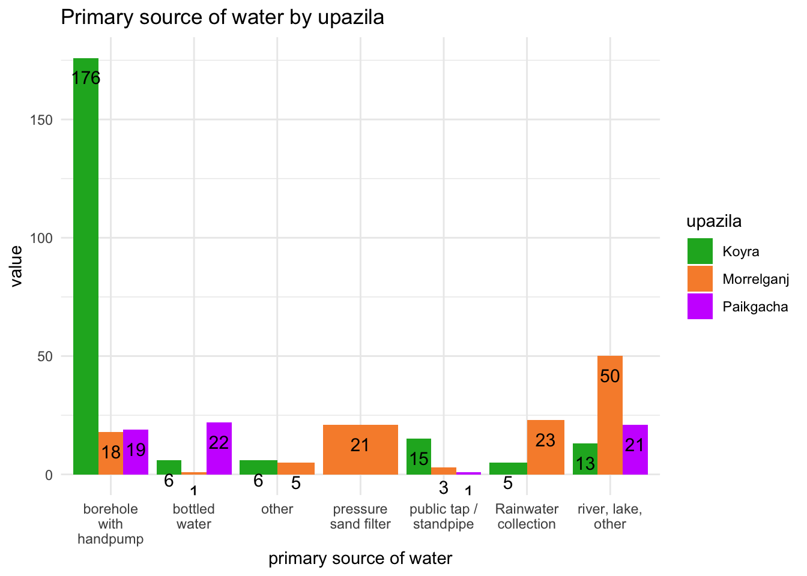
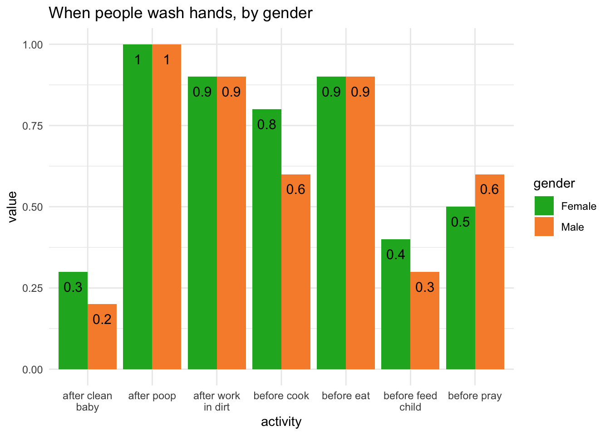

Code
library(here)
library(tidyverse)
library(readxl)
library(gt)
library(dplyr)
library(knitr)
library(ggplot2)
library(ggthemes)
library(scales)This project analyses baseline data from a water, sanitation and hygiene (WASH) project in Bangladesh run by charity:water. The survey asks about access to water, water issues, handwashing practices and defecation (pooping) practices.
I analyzed responses by categories - administrative district (upazila) and gender - to identify differences by category with regards to length of time to collect water, amount of water collected, primary water source and handwashing practices.
This data was obtained from a charity:water project in Bangladesh run by Helvetas, a Swiss development NGO. Permission to use the data for this analysis was given by the Helvetas staff member who provided the data. The data is a pre-project survey using the Household Water InSecurity Experiences (HWISE) Scale, which measures household water insecurity in an equivalent way across disparate cultural and ecological settings.
Access to clean water and sanitation remain challenges in Bangladesh. 70 million people, or 41% of the population, do not have access to clean drinking water (Community Partners International (2025)). In addition, according to the Toilet Conference 2025: The Future of Sanitation, only 39% of residents have their own safely managed sanitation facilities (Global Water & Sanitation Center (2025)), defined by the World Health Organization as flush or pour flush or piped sewer systems, septic tanks or pit latrines and composting toilets, which are not shared with other households (World Health Organization (2025)).
library(here)
library(tidyverse)
library(readxl)
library(gt)
library(dplyr)
library(knitr)
library(ggplot2)
library(ggthemes)
library(scales)raw <- read_excel(
here::here("data/raw/Final Baseline and_HwiseSatisfaction to upload raw.xlsx"),
na = c("", "NA", "N/A", "."))
raw <- raw %>%
mutate(
across(where(is.integer), ~ replace(.x, is.na(.x), 0L)),
across(where(is.double), ~ replace(.x, is.na(.x), 0))
)processed <- raw |>
mutate(primary_source = case_when(
primary_source == "Borehole with handpump" ~ "Borehole_handpump",
primary_source == "Bottled water, sachet water" ~ "Bottle_sachet",
primary_source == "PSF" ~ "Pressure_sand_filter",
primary_source == "Public tap or standpipe" ~ "Public_tap",
primary_source == "Rainwater collection" ~ "Rain",
primary_source == "Surface water (river, dam, lake, pond, stream, canal, irrigation channels)" ~ "river_lake",
TRUE ~ "other"))|>
#avg time to get water - all
mutate(avg_time_get_water= round(mean(total_time_to_get_water, na.rm = TRUE)),3) |>
relocate(avg_time_get_water, .after=total_time_to_get_water) |>
#total water per household, per capita
mutate(total_water=(((num_25L_filled*25)+(num_20L_filled*20)+(num_15L_filled*15)+(num_10L_filled*10)+(num_5L_filled*5)))) |>
relocate(total_water, .after=other_containers) |>
mutate(water_per_cap=round(total_water/num_hh_members,2))|>
relocate(water_per_cap, .after=total_water)
##break out water issues by town
avg_by_upazila <- processed |>
group_by(upazila) |>
summarize(
avg_time_upazila = round(mean(total_time_to_get_water, na.rm = TRUE), 1),
avg_water_upazila = round(mean(water_per_cap, na.rm=TRUE),1),
median_water_upazila = round(median(water_per_cap, na.rm=TRUE),1),
min_water_upazila = min(water_per_cap, na.rm=TRUE),
max_water_upazila = round(max(water_per_cap, na.rm=TRUE),1)
)
##count water sources by upazila
water_by_upazila <- processed %>%
group_by(upazila) %>%
count(primary_source) |>
rename(value = n)
water_by_upazila_percent <- processed %>%
group_by(upazila) %>%
count(primary_source) |>
rename(value = n) |>
mutate(percent = round(value / sum(value) * 100, 1))
#doesn't work
#original<-c("Borehole with handpump",'Bottled water, sachet water','Presure sand filter', 'Public tap or standpipe','Rainwater collection', 'body of water/river/etc.', "other")
#replace<-c("BH_pump","bottle_sachet","PSF","public","rain","river","other")
#replace(water_by_upazila$primary_source, water_by_upazila$primary_source %in% original, replace)
#(water_by_upazila, BH_pump='Borehole with handpump',bottle_sachet='Bottled water, sachet water',PSF='Presure sand filter', public='Public tap or standpipe',rain='Rainwater collection', river='body of water/river/etc.')
##total n by upazila
upazila_n <- processed %>%
group_by(upazila) %>%
count(upazila) %>%
mutate(primary_source = "n")
water_by_upazila2 <- rbind(water_by_upazila, upazila_n)
#this doesn't work (so I added "n" column to upazila_n instead, thus don't need this code)
#water_by_upazila2 %>%
# ifelse(primary_source="NA","n",primary_source)
water_by_upazila_wide <- water_by_upazila2 %>%
pivot_wider(names_from = primary_source, values_from = n) %>%
mutate(across(where(is.numeric), ~replace_na(., 0)))
#percents - doesn't work
# water_by_upazila_wide %>%
# summarise(
# n = n(),
# across(all_of(cols), ~ sum(.x, na.rm = TRUE),
# .names = "sum_{.col}")) %>%
# mutate(
# across([#need to figure out how to input these columns: [,2:8], ~ round(.x / n, 1), .names = "pct_{.col}")
# ) %>%
# rename_with(~ sub("^pct_sum_", "pct_", .), starts_with("pct_")) %>%
# ungroup()
#doesn't work - error ! Can't select columns that don't exist. ✖ Column `pressure_sand_filter` doesn't exist.
#water_by_upazila_wide %>%
# mutate_at(vars(Borehole_handpump:Pressure_sand_filter) , funs(P = #./water_by_upazila_wide$n * 100))
#water_by_upazila_wide3 <- subset(water_by_upazila_wide2, select=c(upazila,"pct_Borehole #with handpump":pct_other))
##summarize when wash hands by gender
cols <- c("when_wash_hands_after_poop","when_wash_hands_after_clean_baby","when_wash_hands_before_cook","when_wash_hands_before_eat", "when_wash_hands_before_feed_child","when_wash_hands_before_pray","when_wash_hands_after_working_in_dirt")
wash_by_gender <- processed %>%
group_by(gender) %>%
summarise(
n = n(),
across(all_of(cols), ~ sum(.x, na.rm = TRUE),
.names = "sum_{.col}") %>%
mutate(
across(starts_with("sum_"), ~ round(.x / n, 1), .names = "pct_{.col}")
) %>%
rename_with(~ sub("^pct_sum_", "pct_", .), starts_with("pct_")) %>%
ungroup()
)
#pivot wash_by_gender to long
wash_by_gender2 <- subset(wash_by_gender, select=c(gender,pct_when_wash_hands_after_poop:pct_when_wash_hands_after_working_in_dirt))
wash_by_gender2 <- rename(wash_by_gender2,after_poop=pct_when_wash_hands_after_poop, after_clean_baby = pct_when_wash_hands_after_clean_baby, before_cook=pct_when_wash_hands_before_cook, before_eat=pct_when_wash_hands_before_eat, before_feed_child=pct_when_wash_hands_before_feed_child, before_pray=pct_when_wash_hands_before_pray, after_work_in_dirt=pct_when_wash_hands_after_working_in_dirt)
wash_by_gender2_long <- wash_by_gender2 |>
pivot_longer(cols=after_poop:after_work_in_dirt,
names_to ="activity",
values_to="value")Table Table 1 shows that time spent collecting water daily, people in Paikgacha spend about 26% less time (42 minutes) than upazilas Koyra and Morrelganj, who both spend about 57 minutes. Interestingly, residents in Paikgacha also collect less water on average per day - almost half of what residents collect in Koyra on average. The median amount of water that Paikgacha residents collect is approximately twice as much what residents in the other two upazilas collect daily, with a maximum value that is roughly five times Koyra’s maximum value and over twice the maximum value of Morrelganj.
#table by upazila
avg_by_upazila |>
gt() |>
fmt_number(columns=c(avg_time_upazila,avg_water_upazila,median_water_upazila,min_water_upazila,max_water_upazila)) |>
fmt_number(columns = avg_time_upazila:max_water_upazila, decimals = 1) |>
cols_label(
avg_time_upazila = "avg time",
avg_water_upazila = "avg water",
median_water_upazila = "median water",
min_water_upazila = "minimum water",
max_water_upazila = "maximum water"
) |>
tab_header(
title=md("By upazila, time to collect water and amount of water (l) collected daily"),
)| By upazila, time to collect water and amount of water (l) collected daily | |||||
|---|---|---|---|---|---|
| upazila | avg time | avg water | median water | minimum water | maximum water |
| Koyra | 57.7 | 10.5 | 10.0 | 0.0 | 100.0 |
| Morrelganj | 56.7 | 7.4 | 6.0 | 0.0 | 41.7 |
| Paikgacha | 41.9 | 5.7 | 5.0 | 0.0 | 22.5 |
Figure 1 shows the primary source of water for residents in the three upzilas. The vast majority of respondents in Koyra get their water from handpumps, while only a few in the other two upazilas do. Responses from Paikgacha are split between boreholes, bottled water and bodies of water such as lakes and rivers. In Morrelganj, bodies of water are the most common water source.
#graph - source of water by upazila
label_map <- c(
"Borehole_handpump" = "borehole with handpump",
"Bottle_sachet" = "bottled water",
"Pressure_sand_filter" = "pressure sand filter",
"Public_tap" = "public tap / standpipe",
"Rain"="Rainwater collection",
"river_lake" = "river, lake, other",
"other" = "other"
)
water_by_upazila |>
ggplot(aes(fill=upazila, x=primary_source, y=value))+geom_bar(position="dodge", stat="identity") +
scale_x_discrete(labels = function(x) {
mapped <- label_map[x]
mapped[is.na(mapped)] <- x[is.na(mapped)]
scales::label_wrap(13)(mapped)
}) +
scale_fill_manual(values=c("#1CB027","#F78E37","#CC00FF"))+
ggtitle("Primary source of water by upazila") +
xlab("primary source of water") +
geom_text(aes(label = value),position=position_dodge(.9),vjust=2,colour="black",size=4) +
theme_minimal()
As Figure 2 shows, both men and women almost universally wash their hands after defecating. The majority wash their hands before eating and after doing manual labor. However, only smaller percentages of either gender wash their hands before feeding a child or after cleaning a baby. The areas with large gender differences - before cooking and before praying - may be due to gender norms in the culture - women are likely the cooks in the household and in Islam, it is men who go to the mosque five times a day to pray.
#graph - when wash hands by gender
label_map <- c(
"after_poop" = "after poop",
"after_clean_baby" = "after clean baby",
"before_cook" = "before cook",
"before_eat" = "before eat",
"before_feed_child" = "before feed child",
"before_pray" = "before pray",
"after_work_in_dirt" = "after work in dirt"
)
wash_by_gender2_long |>
ggplot(aes(fill=gender, x=activity, y=value))+geom_bar(position="dodge", stat="identity")+
scale_x_discrete(labels = function(x) {
mapped <- label_map[x]
mapped[is.na(mapped)] <- x[is.na(mapped)]
scales::label_wrap(13)(mapped)
}) +
scale_fill_manual(values=c("#1CB027",
"#F78E37"))+
ggtitle("When people wash hands, by gender") +
geom_text(aes(label = value),position=position_dodge(.9),vjust=2,colour="black",size=4) +
theme_minimal() 
The data shows the need for WASH projects in the three upazilas.
Only one upazila, Koyra, has a waterpump that serves the majority of residents.
It takes 40 minutes to almost an hour, on average, for residents of the three upazilas to collect water.
The amount of water residents have may be an issue: respondents in Paikgacha collect approximately half of the liters of water that respondents in Koyra do.
People of both genders fail to wash their hands before and after significant activities.